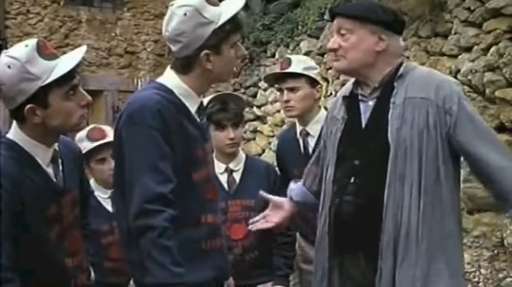

No sé exactamente qué edad tenía entonces, las veces en las que mi padre estuvo destinado en El Hierro. Esto suena a algo como de militar, así dejaré cierto misticismo alrededor de su figura un poco porque así ha surgido. Lo que sí sé es que tenía esa edad de querer dedicar todo mi tiempo libre a la consola y poco más. Me huele esa época a Inazuma Eleven 2: Ventisca Eterna, indagando entre las repetitivas misiones para seguir avanzando en el árbol de contactos. A las partidas al FIFA con mi hermano que no solían acabar bien, de las que si volviese al pasado, desearía alejar esa toxicidad de juego de unas mentes tan jóvenes, aunque era divertido, para que negarlo. El juego de Disney de la EyeToy y el Invizimals de mi PSP azul turquesa se me queda algo atrás, pero aún tenía ese regustillo entre los dientes. Deuvedés de las películas de Piratas del Caribe y revistas Nintendo Acción llenaban el salón de mi padre.
Esa era la época, llamémoslo el año dos mil y tanto ni tan poco, y a las que les llegue este texto sabrán más o menos qué quiero decir.
El Charco Azul, Tacorón, La Caleta, El Tamaduste, la bajada de la virgen de los Reyes. No me gustaba especialmente ir al principio yo creo. Quiero decir, no me lo cuestionaba mucho, supongo que no tenía amistades o una visión de las mismas que me hiciera querer estar pegado a Tenerife, y las vacaciones en el colegio y en el instituto las veía como por fin esa libertad de horas para reventar la consola, independientemente de donde estuviese yo físicamente. Siendo honestos, no es como que me cortase durante el año (y menos mal), pero uno se sentía menos juzgado si se pasaba 13 horas seguidas delante de la DS si ocurría en agosto en vez de en marzo. Ir a bañarnos al mar, bueno, era divertido a veces, pero traía también momentos de inseguridades ya sean propias o de mis familiares que lo hacían todo más difícil. Pero siempre había alguna pequeña cosa que me hacía tener muchas ganas de ir, como comer pescadito o un postre de limón. Ya saben, es que yo soy un hombre muy primario, y estoy sujeto terriblemente a las pasiones.
Entonces llegó mis años más de adolescencia. Sigo sin saber exactamente el año, perdónenme. Seguían las partidas al FIFA, ahora, había una PS3 de estas que la apertura de discos está arriba y parece que se rompería con mirarlas (de hecho, recuerdo que en ella viví mi primer crasheo, con el reboot de Tomb Raider, lo cual me pareció super loco). Y seguía sin gustarme pasar cierto tiempo fuera de casa y con mi familia en esos lugares tan preciosos de olor a salitre que no estaban tan llenos de guiris. Ahora ya tenía algunos coleguitas de esos de verano por ahí, pero ese rubor familiar adolescente sumado a los problemas que se movían siempre en mis cuatro paredes no hacían fácil según qué tardes de verano. Pero aquí es cuando cambiaron las cosas. Ya fuese por hartazgo o por aburrimiento, me alcé de valor, cogí crema solar, mi Sony Xperia S, unos auriculares y la revista de videojuegos que tuviese a mano y me fui solo a bañarme al Tamaduste. Nunca solía estar solo si no era en casa, o jugando a cosas o leyéndome algún libro.
Esa experiencia creo que me cambió la vida. Sentí que apreciaba las cosas a mi alrededor; yo soy un hombre cis, no se me daba muy bien y no me habían enseñado a dejarme sentir, a entrar en mi mismo en vez de estar fuera todo el rato, a tener cierta introspección, vamos. Ahora creo que se me da mejor, pero tampoco se crean, todes supongo que arrastraremos para siempre con estas cargas que se crean de enanos en nuestras cabezas. Experimentar eso por primera vez fue, raro. A veces recuerdo que me ponía nervioso y no sabía donde meterme, me ponía a pensar en si alguien estaría pensando algo ridículo sobre mi, o en lo guay que podría parecerle a los demás por ser el chico independiente e interesante que iba solo a la cala. El más cool. Pero lo que realmente acabé viviendo, fue una sensación como de verdadero silencio, donde sólo podría hablar yo conmigo mismo. Las rompientes, las pardelas, pedruscos en las cuatro esquinas de las toallas, escarpines para no tocar el musgo con los pies, el olor a salitre, cualquier combinación de detalles similares tienen el poder de desbloquear una parte de mi que se va bloqueando con el tiempo. Este desbloqueo creo que es simplemente una réplica de lo que viví ese día. En aquel momento ese bloqueo era más por presiones en las que nos criamos, hoy en día por las que me ejerzo y ejerce sobre mi el sistema de mierda en el que vivimos. Es un cliché, pero es que a veces los clichés simplemente responden a algo que pasa en la realidad: el tiempo iba más lento, y yo me hablaba a mi mismo. Bueno, no, siendo honestos de nuevo, yo no tenía ni idea de como coño se hacía eso, y tampoco lo hacía. Lo que sí era capaz de hacer es de silenciarlo todo y estar en paz, cosa que a veces, tanto videojuego y tanta familia no me dejaba experimentar.
Fue un gran descubrimiento, porque aunque después uno volvía a todo lo de todos los días, realmente el efecto generado por ese espacio y tiempo me duraba mucho más.
Hoy, en 2024, tengo 24 años y me estoy sintiendo parecido. Me siento como rompiendo un bloqueo de años, y estoy dejándome sentir más de maneras que no conocía como cuando tenía esa edad indeterminada. Me veo dándole una importancia mayúscula a estos silencios y espacios. Y pienso que los lugares digitales que ocupamos deberían partir de este punto, porque creo que todes estamos ya demasiado hastiados por la angustia y ansiedad que generan, seamos más o menos conscientes o partícipes.
Lo digital es parte de lo físico, y no existiría lo uno sin lo otro. De hecho, la conexión entre lo digital y lo físico, que suele ser la interacción, también la vivo mejor si la intento acercar desde este punto de paz, como si estuviese en esas calas. Esos momentos con mandos, ratones y teclados en mis manos quizás los experimento mejor cuando tengo la mente libre de perversiones, me dejan experimentar y disfrutar de un jueguito mucho mejor. (Pequeño paréntesis: tengo el mismo problema que todos ustedes, no me siento cómodo usando “videojuego” por sus connotaciones con la industria, pero no creo que exista una palabra aún que podamos usar que no sea absurdamente pedante, así que tiraré por la que se me ocurra en cada momento).
De ahí la creación de esta web. Algunos de los momentos de mi vida donde más reflexivo he estado ha sido en esas situaciones de soledad en calas, creando un ambiente super místico, yo sintiendo mi propia consciencia (suene lo hippie que suene esto). Y mi experiencia con los juegos, ya sea interactuando con ellos o intentando crearlos, parte desde aquí desde hace un tiempo. Me gustaría seguir expresándome, darle vueltas a ideas y tener un sitio seguro donde escribirlas y mostrarle a la gente que quiero y a la gente que se pueda sentir como yo estas ideas. No quiero ser el único que use este espacio, y si alguien se siente identificado siempre será bienvenide a usarlo, por muy personal que haya sido todo este fragmento. Estaré encantado de que me acompañen por aquí.